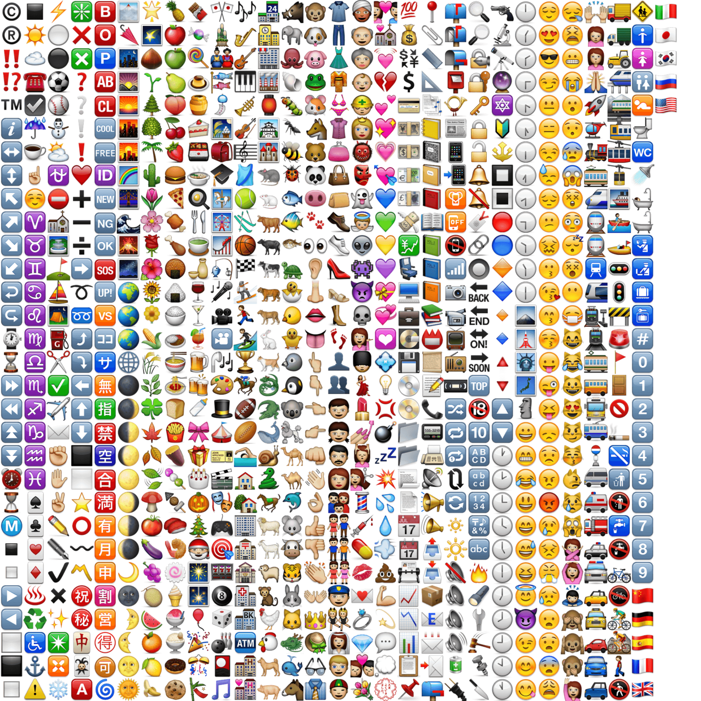
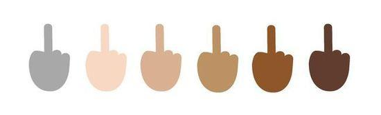
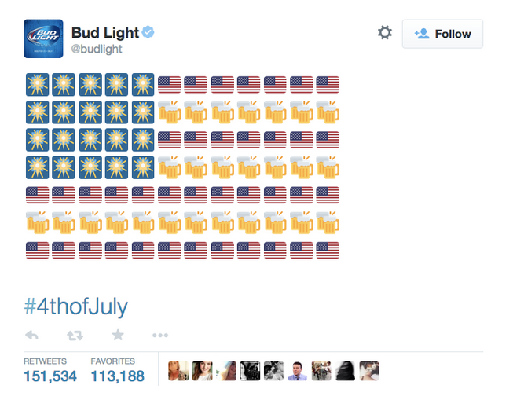
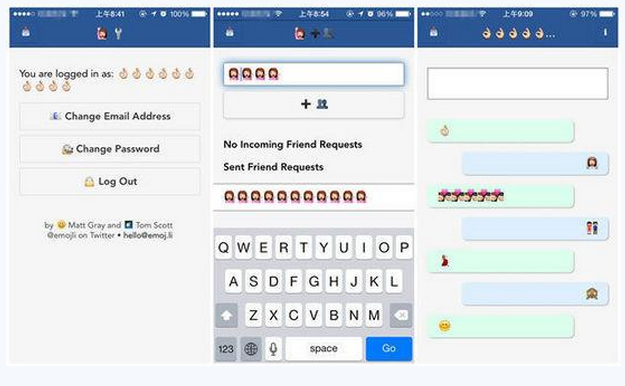
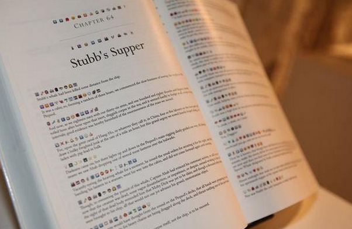

Emoji的国际化主要是以欧美为主流的社会中，表情符号的发展，就如同连玩游戏都能玩出一个“游戏化”市场营销推广，使用表情聊天，也成为一种正式的商业形态和行业标准。
首先体现在行业标准化，表情符号发展的最大助力因素是苹果公司为主的大型企业，2011年的IOS5中，就有了表情符号的输入，又如Unicode 作为全球统一化的计算机字符编码，也在主动积极的在各更新版本中加入各种表情及符号元素。标准化的发展极大的推动了表情的进化，Unicode7.0中新增了250个表情，涵盖不同的肤色和种族文化。
密密麻麻的表情符号，这还不是最多的，最新的版本还有对应的肤色
15 亿 Windows 用户很快就可以方便地在网上对人竖中指了。
这是一种新的交互方式
据绘文字（emoji）百科 emojipedia 最新公布的表情列表，微软将在 Windows 10 中首次接纳竖中指的表情，从而成为第一个允许用户在操作界面上用 emoji “爆粗口”的科技公司。
除了竖中指，微软决定在新版的 emoji 系统里把小人的皮肤默认颜色设定为灰色，于是每一个 emoji 表情都将有 6 种肤色可以选择。
微软并不是第一家认真对待 emoji 的公司。
此前，苹果在更新 iOS 8.3 的时候，一口气新增了 300 多个表情符号，其中就包括将小人的肤色扩充到 6 种。在 emoji 键盘里，长按住这些外星人，你就能找到自己的同类，肤色、发色、性取向都能换。

在 Apple Watch 上，除了预设的文字回复和随手绘制的图案，基本沟通可能就靠emoji 了。你和朋友可以通过重新绘制的动态 emoji 来通讯。苹果将最新的 Force Touch 功能用在了 emoji 上，长按屏幕，可以改变动态 emoji 的颜色。
Google 则为 Android 手机用户推出了能识别 emoji 的输入法，意思就是，用户不再需要一个一个找要输入的表情，画出来就好。
Instagram 已经支持用 emoji 来打标签，在最近的一份报告里，它们宣称至少 40%的评论里都包含有表情符号。
表情符号与商业结合，成为移动营销的新方式，例如百威公司使用符号和啤酒组成了美国国企，这条Twitter的推送符合了社交媒体新颖而且容易理解的特色。
百威啤酒为了纪念美国国庆的推送，Twitter的数量级别和微博是不同的，不可用微博巨大的数字去对比
同样，emoji在国际的发展向着代替语言的图形化表现呈现，当然我觉得这只是一种内容营销的手段，并非可以完全成为主流沟通，亦无法取代文字。如仅使用emoji聊天的app应用emoji.ly，
获得了7w用户的emoji聊天，有丰富的娱乐度但是后期的黏着度并不一定完美
把表情作为一种语言，更多的是有趣和噱头，虽然在西方有许多的尝试，例如众筹集资开发表情语言翻译机，或者借住表情符号来解释复杂的概念，但是那都只是辅助，表情纯粹的成为文字取代还是比较困难的。
2009 年，Kickstarter 的数据工程师 Fred Benenson 主持将一整本书《白鲸记（Moby Dick）》用 emoji 翻译